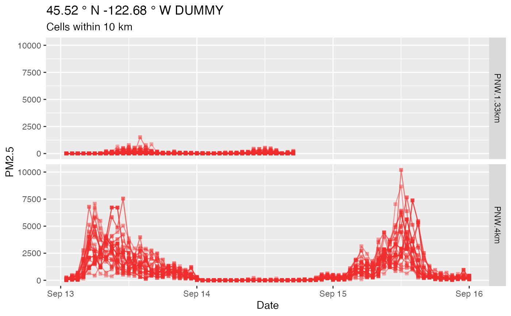

raster_spaghettiPlot.RdPlot a "spaghetti plot" of model data near a target location.
For each Raster\* object in raster, cells near the target location
are extracted using raster_subsetByDistance(). These are converted
into individual PWFSLSMoke ws_monitor objects using
raster_toMonitor() and then plotted.
raster_spaghettiPlot( raster = NULL, longitude = NULL, latitude = NULL, radius = 5, count = NULL, rasterName = NULL, verbose = TRUE, ylim = NULL, ... )
| raster | A Raster\* object or a list of Raster\* objects. |
|---|---|
| longitude | Target longitude from which the radius will be calculated. |
| latitude | Target latitude from which the radius will be calculated. |
| radius | Distance (km) of radius from target location. |
| count | Number of grid cells within radius to return. |
| rasterName | Name used when |
| verbose | Logical to display messages. |
| ylim | Optional Y axis limits. |
| ... | Additional arguments passed to |
A ggplot object.
# \donttest{ library(AirFireModeling) setModelDataDir('~/Data/BlueSky') # Creating PWFSLSmoke ws_monitor objects requires: library(MazamaSpatialUtils) PWFSLSmoke:::initializeMazamaSpatialUtils() # Portland, Oregon longitude <- -122.68 latitude <- 45.52 models <- bluesky_findModels(longitude, latitude) # > models # [1] "NAM84-0.15deg" "GFS-0.15deg-CanadaUSA-p25deg-68N" # [3] "NAM-3km" "CANSAC-4km" # [5] "PNW-4km" "PNW-1.33km" # We will only use a subset for this example # Load model data rasterList <- raster_load( modelName = c("PNW-1.33km", "PNW-4km"), modelRun = 2020091300, xlim = c(-125, -115), ylim = c(42, 50) )#>#>raster_spaghettiPlot( rasterList, longitude = longitude, latitude = latitude, radius = 10, # km rasterName = "DUMMY" )#>#>#> Warning: Removed 18520 row(s) containing missing values (geom_path).#> Warning: Removed 18520 rows containing missing values (geom_point).# }